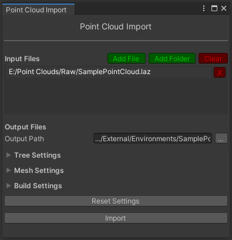
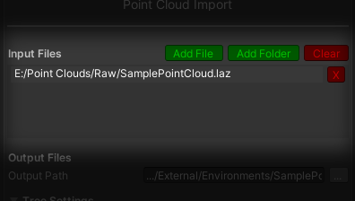
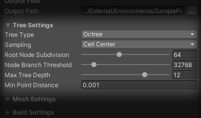
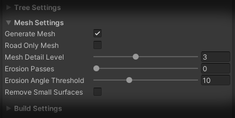
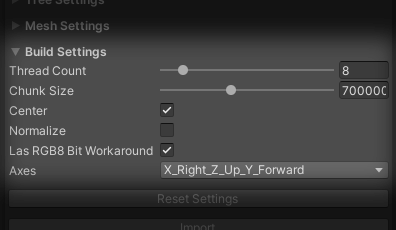

Point Cloud Import#
SVL Simulator uses its own format to store all of the point cloud data for rendering. To make any point cloud usable within the simulator, it has to be processed first.
Built-in point cloud importer tool provides all the functionality required to convert most popular point cloud file formats (PCD, PLY, LAS, LAZ) into data usable for simulation. It is also able to create approximated mesh collider based on imported data.
If you're using pre-built point cloud environments, you don't have to use this tool. Its main purpose is to create new environments compatible with Simulator from raw point cloud data.
Accessing the importer top#
To access point cloud importer window, open Simulator project in Unity editor, then navigate into Simulator/Import Point Cloud on the menu bar. Point cloud importer window will be opened.

Import process overview top#
Importer window requires you to at least specity input and output files, but also gives you access to additional settings. All of these are described in more detail in their respective sections.
To start the import process, just click "Import" button at the bottom of the window. Depending on the point cloud size and chosen settings, this process might take a while. You'll see multiple progress bars during this time for preprocessing steps and the main import process itself. If you cancel the import process, partially processed data is not usable.
Processing points can be performed on multiple threads, but first pass is always single-threaded. Progress bar reporting that only one thread is used during this time is normal. After the first pass, import process speeds up severely depending on amount of threads available.
Importer will validate some of your import settings before the import process. There is a chance that "Import" button will be disabled. Error or warning message is always displayed in this case, with an information about the reason.
Most convenient way of using the importer is with target environment scene open in the background - in this case the tool will offer to setup open scene with all the components required for rendering after the import process succeeds. You can also decide to skip this step and set the components yourself. Details about this are available on the point cloud rendering page.
Importer settings top#
Importer window is split into multiple sections, each with settings related to different subject.
Input Files top#
This tab is used to select point cloud files that should be converted into combatible format.

Multiple files to import can be added at once. All of the files listed in this tab will be merged into single point cloud after importing. If you prefer to keep them separated, import each one of them individually (rendering multiple point clouds is supported, but decreases performance).
All of the input files must be of one of following formats: PCD, PLY, LAS, LAZ. Mixing multiple formats is supported.
Add Folder button will add all of the compatible files from selected folder into the list. This does not include subdirectories.
Output Files top#
This tab expects you to specify a directory that will be used to store all of the generated files. This directory does not have to be inside of the project's folder and can be located in any accessible place on the drive. If you decide to use directory inside the project, path relative to Assets folder fill be used instead of absolute path to help with cross-machine migration.
Using directory with processed point cloud data already present will overwrite all of previous data. Warning about this is displayed in such case.
Please note that output directory will contain a lot of files after import process. If this directory is located under Assets folder, Unity will generate metadata for each of the files. This process takes a long time and the metadata is completely unused, so it's recommended to skip meta file generation altogether. This can be done by using Unity's special folder names - just make sure that folder name ends with ~.
Tree Settings top#
This tab describes data structure and layout of the imported point cloud. Default settings are working well with most of the standard data sets, so changing them is usually not required.

| Parameter Name | Description |
|---|---|
| Tree Type | Tree data structure used to subdivide point cloud. Octree and Quadtree variants are available. |
| Sampling | Sampling used on each level of the tree structure, determining distribution of points in the final cloud. Cell Center uses voxel-based, uniform sampling. Poisson Disk offers more natural-looking distribution, but is slower and does not support mesh generation. |
| Root Node Subdivision | Determines amount of per-axis samples for each node. Higher values will create larger nodes, while lower values will create deeper tree structures. |
| Node Branch Threshold | Minimum amount of points in the node required for splitting it further. Prevents creating mostly empty nodes and overly deep tree structure. |
| Max Tree Depth | Maximum amount of levels in the tree structure. Levels deeper than the specified value will be discarded. |
| Min Point Distance | Minimum distance between points in a node. Points below this threshold will be discarded. |
Mesh Settings top#
This tab contains options related to collider mesh generation.
Note that mesh generation will only work for Cell Center sampling.

| Parameter Name | Description |
|---|---|
| Generate Mesh | If this option is enabled, mesh collider will be generated and additional settings will be available. |
| Road Only Mesh | If this option is enabled, mesh generation will attempt to only create mesh for the road, ignoring other structures. This option is not suitable for all data sets - if you experience problems, try again with this feature disabled. |
| Mesh Detail Level | Level of the tree that should be used for mesh generation. This should corelate with represented area size - for single intersection level 2 is usually enough, while larger areas with multiple roads might require level 5 or higher. |
| Erosion Passes | Number of erosion passes that will be performed after mesh generation. Erosion will remove and flatten steep surfaces. See erosion for details. |
| Erosion Angle Threshold | Surfaces angled steeper than this threshold will be processed during erosion passes. |
| Remove Small Surfaces | If this option is enabled, small, secluded surfaces that are not attached to larger clusters will be removed after mesh generation. |
Erosion top#
Depending on the mesh detail and point cloud quality, you might get some unwanted obstacles included in the mesh generation process. If you prefer a flat surface that's easier to drive on, you can include one or more erosion passes during import. This will remove steep sections of the mesh and flatten the underlying geometry. You can see how the erosion process affects the final mesh in the image below.
{kind=link}
Build Settings top#
This tab contains options related to import process and initial point cloud transformations.

Some options under this tab will affect amount of system memory required during the import process. You will see the warning if you're exceeding your system's limits - lower one of related settings values in this case.
| Parameter Name | Description |
|---|---|
| Thread Count | Amount of threads that the import process should be split across. It's not guaranteed that all of the threads will be utilized fully, but higher thread count reduces import time. Affects memory requirements. |
| Chunk Size | Maximum amount of points loaded into memory at once, per thread. This only affects import process and has no effect on output data. Affects memory requirements. |
| Center | If this option is enabled, local space origin of the output point cloud will be moved to its bounds center. |
| Normalize | If this option is enabled, all points positions will be rescaled to fit normalized coordinates. |
| LAS RGB 8bit Workaround | If this option is enabled, additional 8 bit offset is used when reading color and intensity from LAS files. Use this if your data imported from LAS files seems to have corrupted color and/or intensity values. |
| Axes | Coordinate system axes convention used in original files. Setting this to correct value ensures that output point cloud will be compatible with Unity's coordinate system. |